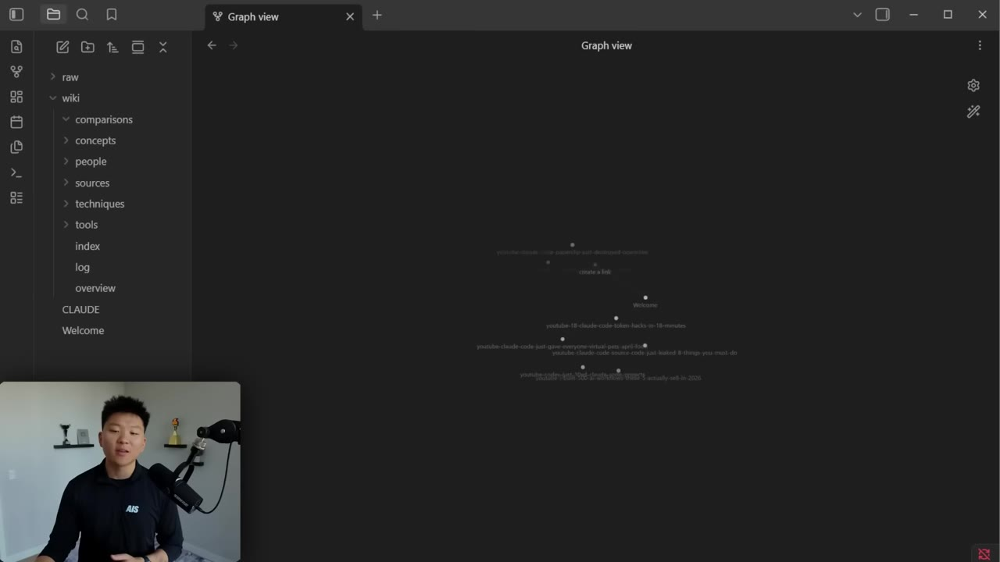
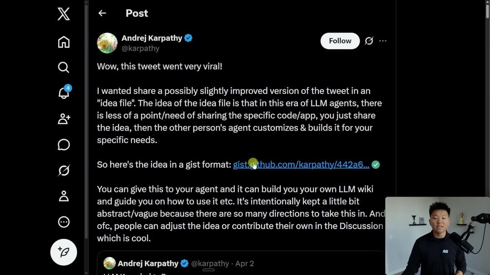
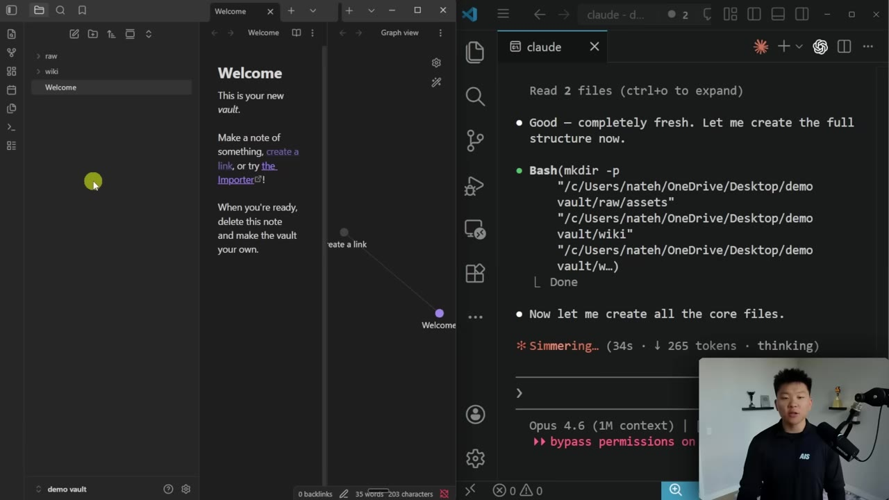
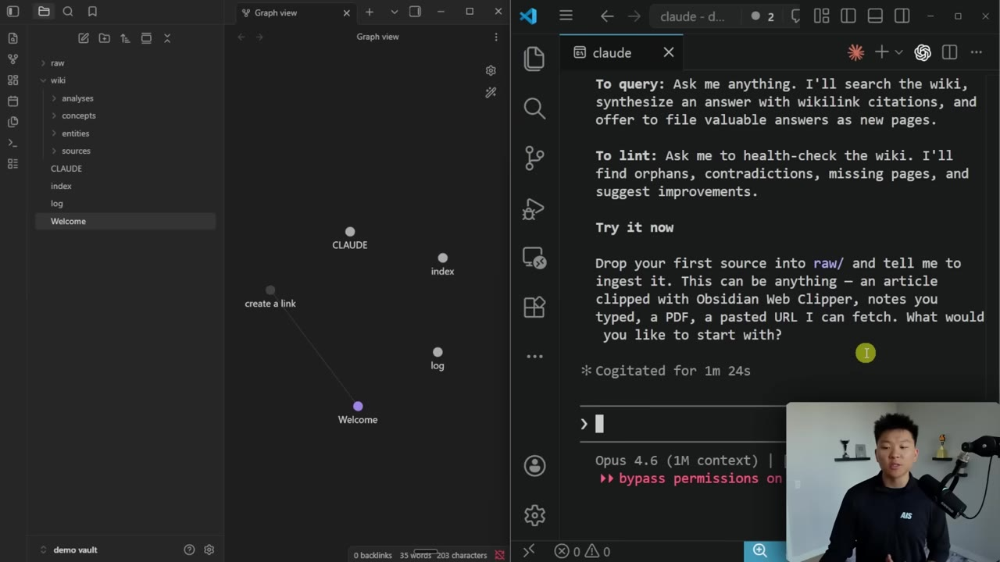
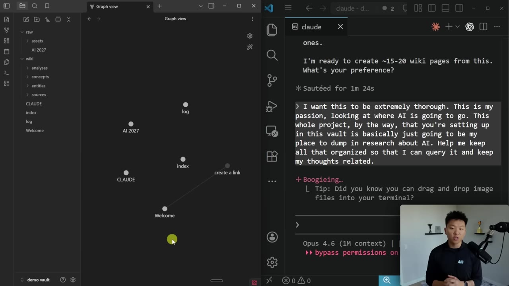
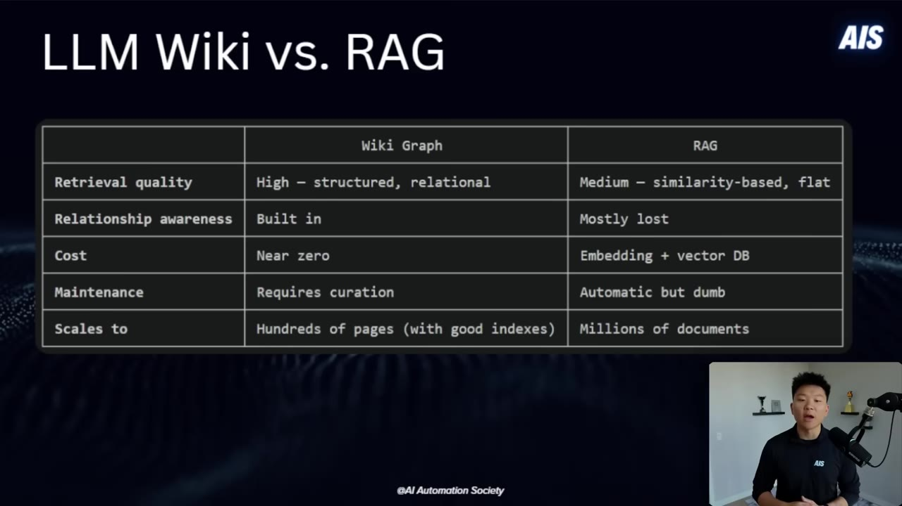

Andrej Karpathy's "LLM wiki" idea went viral because it solves a problem most people have — AI conversations disappear the moment they end. Instead of chasing vector databases and embedding pipelines, Karpathy showed that Claude Code can take raw documents and turn them into a structured knowledge base that organizes itself. Nate Herk walks through the full setup and shows why the approach is so much simpler than it sounds.
Watch on YouTubeNate opens by showing his existing YouTube knowledge system — 36 recent videos organized into a graph where each video node carries tags, a link, a raw file reference, and an AI-generated explanation of takeaways. You can follow the backlinks between nodes to find every mention of Claude Code, the WAT framework, Perplexity, or any other tool he's covered.

"As this continues to fill up, we can start to see patterns and relationships between every tool or every skill or every MCP server that I might have talked about in a YouTube video, and I can just query it in a really efficient way now that we have this actual system set up."
The same vault also holds his personal "second brain" — stuff about Up-to-AI, his YouTube channel, employees, Q2 initiatives — and the two can live separate or combined, plugged into whatever AI agent needs context.
Karpathy's tweet about LLM knowledge bases blew up because the core insight is deceptively simple: you don't need a fancy RAG pipeline. You give Claude Code raw documents, it organizes them into a wiki with its own indexes and summaries, and you can query the result at any time.

The system has two phases. First, data ingest — PDFs, transcripts, URLs dumped into a folder. Claude Code processes everything, auto-maintaining index files and brief summaries of all documents. At his current scale of ~100 articles and ~500k words, it "reads all the important related data fairly easily."
The second phase is Q&A — ask questions about the knowledge base and get answers pulled from the structured wiki, not a throwaway chat context.
"I thought that I had to reach for fancy rag, but the LLM has been pretty good about auto maintaining index files and brief summaries of all documents, and it reads all the important related data fairly easily at this small scale." — Andrej Karpathy
The entire knowledge system is just a folder of markdown files. No database, no embeddings, no infrastructure.

vault/
├── raw/ ← drop in articles, PDFs, transcripts
├── wiki/
│ ├── concepts/ ← Claude Code files knowledge here
│ ├── entities/
│ ├── sources/
│ ├── analyses/
│ ├── index ← clickable hub of all topics
│ └── log ← operation history (every ingest/update)
├── Claude.md ← instructions for how the project works
└── hot.md ← ~500-char cache of what's most recent
Claude Code splits into four default wiki subfolders — analysis, concepts, entities, sources — but Karpathy notes you can keep it flat with no subfolders depending on your needs. The Claude.md file is the key: it tells any Claude instance how to search, update, and navigate the vault.
Cost: near zero. Your only expense is the Claude API tokens for the ingestion step. No vector DB hosting, no embedding compute, no storage layer.
You don't need a fancy vector database, embeddings, or complex infrastructure. It's literally just a folder with markdown files. That's it.— Nate Herk
The setup takes five minutes. Nate walks through it live:

raw/ (via Obsidian Web Clipper, paste, or URL fetch) and tell Claude to process itWhen Nate ingested the "AI 2027" article, Claude generated 23 wiki pages covering six people, five organizations, one AI system, plus technical, alignment, and geopolitical concepts. The graph view in Obsidian lets you watch nodes appear and connections form.
Once the wiki exists, the real value compounds. Nate shows two use cases from his own vaults:
The YouTube wiki — keep it as a research database. Point any Claude instance at the folder; it reads the index, follows backlinks, and queries structured content.
Herc Brain — his executive assistant vault. Claude.md includes a wiki path that lets the assistant read his business knowledge on demand: hot.md for recent context, the domain sub-index for structured queries, and the full wiki when needed.

Claude Code also runs health checks (linting): it scans for inconsistent data, fills gaps using web searches, surfaces interesting connections as new article candidates, and can even ask you for more info when it's stuck.
"One X user turned 383 scattered files and over 100 meeting transcripts into a compact wiki and dropped token usage by 95% when querying with Claude."
Does the LLM wiki kill RAG? Kind of. It depends on your scale and goals.

| Wiki Graph | RAG | |
|---|---|---|
| Retrieval quality | High — structured, relational | Medium — similarity-based, flat |
| Relationship awareness | Built in | Mostly lost |
| Cost | Near zero | Embedding + vector DB |
| Maintenance | Requires curation | Automatic but dumb |
| Scales to | Hundreds of pages (with good indexes) | Millions of documents |
The wiki graph reads indexes and follows links for deeper understanding of relationships rather than just finding "similar" chunks. But at enterprise scale — hundreds of thousands to millions of documents — traditional RAG (knowledge graph, vector search) still wins on raw throughput.
For personal knowledge management? Markdown wins. Always.